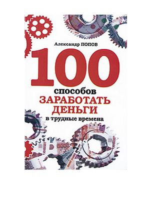

Становимся богатыми.

Что бы ни говорили о преимуществах бедности, факт остается фактом – невозможно жить по-настоящему полноценной жизнью, не будучи богатым. Увы. Есть, безусловно, исключения – монахи, дауншифтеры, но это лишь исключение, а не правило.
Цель нашей жизни – развитие, и для этого мы должны свободно и неограниченно пользоваться всем, что помогает нам в умственном, духовном и физическом развитии. А без денег это невозможно.
Желание реализовать врожденные способности – неотъемлемая часть человеческой природы, и мы не должны ограничивать себя. А без денег это, увы, невозможно.
В том, чтобы стремиться к деньгам и хотеть жить достойно, нет ничего плохого. Но почему у некоторых людей это получается, а у некоторых нет?
Присмотритесь к своим знакомым, бедным и богатым. Видите разницу? Богатые уверены в себе, спокойны, невозмутимы. А бедные вечно суетятся, просят извинения, и порою кажется, что они выпрашивают то ли денег, то ли просто хорошего отношения к себе.
Вы, конечно, можете сказать: неудивительно, ведь те богаты, а эти бедны, и ведут они себя соответственно содержимому кошельков. Но возможно, вы знали этих людей, когда богатые еще не разбогатели, а вполне совпадали по материальному достатку с бедными. Ведь вспомните, тогда и богатые, и бедные вели себя совершенно так же, как сейчас. Может, эти черты в них лишь немного усилились с возрастом, но это неудивительно – чем старше человек, тем сильнее проявляется в его лице, манерах жестах и интонациях его внутренняя суть, его стержень. Почему же одни были уверены в себе, когда они еще не разбогатели? А другие вечно извинялись, хотя еще не знали, что они бедны? Тогда наличие или отсутствие денег не оказывало на них никакого влияния. Ведь, на самом деле, не деньги влияют на нас, а мы влияем на деньги. Деньги, если угодно, – это крысы из сказки про гаммельнского крысолова. Это только кажется, что они организованны, страшны и сильны. Стоит лишь заиграть волшебной дудочке, они тут же вытягиваются во фрунт и маршируют вслед за ее обладателем.
Вот так устроена жизнь. Одних она от рождения одарила волшебной дудочкой, а других нет. Что же делать, можно ли где-то найти эту прекрасную дудочку? И что она собой представляет?
Никакой сказки, загадки или мистики здесь нет. Просто одни люди уверены в себе, а другие не уверены. Уверенность как раз и служит волшебной дудочкой. Понятно, что эта черта человеческого характера не сама по себе притягивает богатство. Притягивают деньги ее производные: людское уважение, симпатии, доверие. Ведь даже в долг вы скорее дадите человеку, который уверен в себе, а не тому, кто прячет глаза. И на работу возьмете именно того, кто смотрит открыто, отвечает спокойно, ведет себя с достоинством. Он уверен в себе не потому, что удачлив, а он удачлив потому, что уверен в себе. Он не думает, что с ним может случиться что-то плохое, а неудачник вечно ждет от жизни подвоха. И программирует свою жизнь на подвох. В американских тюрьмах провели опрос среди грабителей, насильников и прочих граждан, осужденных на большие сроки. Им показали съемку улицы с идущими прохожими и попросили указать на тех, кого бы они выбрали в качестве своих жертв. И, что удивительно, в разных тюрьмах, в разных штатах, на севере и юге, западе и востоке разные преступники выбрали в качестве потенциальных жертв одних и тех же людей. Исследователи попросили их объяснить свой выбор, но преступники не смогли этого сделать. На самом деле, все очень просто: потенциальные жертвы были не уверены в себе. Страшно напасть на того, кто в себе уверен. Даже если он кажется более слабым. А почему он такой уверенный? Может, у него пистолет? Или черный пояс по карате? Или еще что-нибудь? Ведь он же ничего не боится, и это видно! А он не испытывает страха просто потому, что чувствует уверенность. Вот и вся загадка. Каждый человек, и преступник в том числе, отчасти животное. Преступник, возможно, является животным чуть в большей степени, чем остальные люди. Для того чтобы выжить в джунглях криминала, где любой готов съесть любого, им нужны острый нюх и великолепно отточенная интуиция, помогающая обойти опасность. Поэтому в уверенном в себе человек они чувствуют угрозу своим преступным замыслам. А обыкновенные люди видят прямо противоположное – такому человеку можно доверять. На него можно положиться. Он не подведет.
Так как же неуверенному в себе научиться уверенности? С одной стороны, это очень просто – сказать: «Отныне, вот с этой самой минуты, я уверен в себе, у меня все получится. Я буду богатым». Но ведь не уверенный в себе не уверен настолько, что не поверит в эти слова, не поверит даже себе, родному. Значит, надо повторить эту фразу еще раз. Потом еще раз. И еще. До тех пор, пока вы не поверите в нее. До тех пор, пока она не станет вашим дыханием. До тех пор, пока она не отпечатается матрицей в вашем сознании.
Едете в транспорте и говорите про себя: «Я богат. Я богат. Меня любят деньги». Стои?те в очереди и со всей уверенностью произносите мысленно: «Мне повезет. Удача ходит за мной по пятам». Зашли на работу, поздоровались с коллегами и тут же мысленно произнесли: «У меня все получится. Нет на свете таких вещей, которые бы у меня не получились!»
Правда, произнести это придется очень много раз. Ведь противоположные слова вы произносили всю жизнь! Так что за один день вам себя не переделать.
Но не бойтесь, у вас все получится!